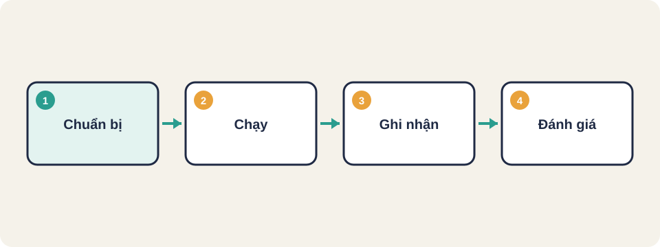
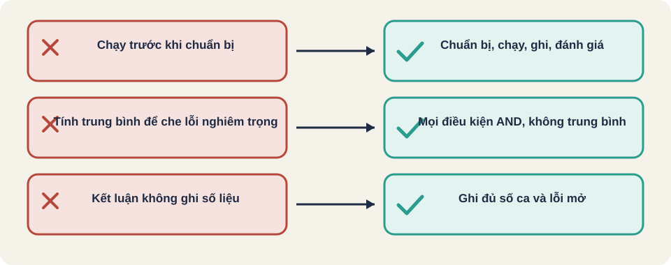

Hình vẽ gốc, dùng để minh họa thứ tự các bước chính của bài.
Mỗi loại kiểm thử đi theo quy trình nào, làm bước nào trước, và đạt khi nào. Từng loại một, có ví dụ và lỗi hay gặp.

Hình vẽ gốc, dùng để minh họa thứ tự các bước chính của bài.
Kiến thức chung, viết lại bằng lời của người soạn bài.
Kiến thức chung, viết lại bằng lời của người soạn bài.
Thuật ngữ trong slide này: Chuẩn bị, chạy, ghi nhận, đánh giá: Bốn giai đoạn của một lần kiểm thử, làm theo đúng thứ tự.
Ví dụ: Hàm kiểm năm nhuận: ca 2000 (nhuận), 1900 (không), 2024 (nhuận), 2023 (không), và năm âm (sai).
Đạt khi: Mọi ca đạt; các nhánh quan trọng đã được phủ; không gọi cơ sở dữ liệu thật.
Lỗi hay gặp: Test gọi cả cơ sở dữ liệu nên chạy chậm và hỏng ngẫu nhiên.
Kiến thức chung, viết lại bằng lời của người soạn bài.
Thuật ngữ trong slide này: Chuẩn bị, chạy, ghi nhận, đánh giá: Bốn giai đoạn của một lần kiểm thử, làm theo đúng thứ tự.
Kiến thức chung, viết lại bằng lời của người soạn bài.
Thuật ngữ trong slide này: Chuẩn bị, chạy, ghi nhận, đánh giá: Bốn giai đoạn của một lần kiểm thử, làm theo đúng thứ tự.
Ví dụ: Dịch vụ đặt hàng gọi dịch vụ tính thuế: kiểm tổng tiền sau thuế đúng và hóa đơn được lưu.
Đạt khi: Luồng dữ liệu qua mọi chỗ nối đúng; lỗi từ dịch vụ phụ được xử lý.
Lỗi hay gặp: Hai bên đều đúng với tài liệu của mình, nhưng định dạng ngày khác nhau.
Kiến thức chung, viết lại bằng lời của người soạn bài.
Kiến thức chung, viết lại bằng lời của người soạn bài.
Thuật ngữ trong slide này: Chuẩn bị, chạy, ghi nhận, đánh giá: Bốn giai đoạn của một lần kiểm thử, làm theo đúng thứ tự.
Ví dụ: Mua hàng: thêm vào giỏ, thanh toán bằng thẻ thử, nhận mã đơn, đơn hiện trong lịch sử.
Đạt khi: Mọi luồng nghiệp vụ chính đạt; lỗi nghiêm trọng đã đóng hoặc được chấp nhận có lý do.
Lỗi hay gặp: Chỉ kiểm trên môi trường khác hẳn sản phẩm thật, nên lỗi cấu hình bị bỏ sót.
Kiến thức chung, viết lại bằng lời của người soạn bài.
Kiến thức chung, viết lại bằng lời của người soạn bài.
Ví dụ: API đăng nhập nhận trường mật khẩu bị thiếu: kiểm mã 400 và thông báo rõ trường nào thiếu.
Đạt khi: Mọi dữ liệu hợp lệ và không hợp lệ đều có phản hồi đúng; không có lỗi 500 với dữ liệu người dùng gửi.
Lỗi hay gặp: Đổi tên một trường ở API làm hỏng ứng dụng di động cũ mà không ai biết.
Kiến thức chung, viết lại bằng lời của người soạn bài.
Kiến thức chung, viết lại bằng lời của người soạn bài.
Thuật ngữ trong slide này: Chuẩn bị, chạy, ghi nhận, đánh giá: Bốn giai đoạn của một lần kiểm thử, làm theo đúng thứ tự.
Ví dụ: Sửa lỗi đăng nhập: chạy lại đăng nhập, xem bài, luyện tập, và đăng xuất.
Đạt khi: Các luồng cốt lõi vẫn đạt như trước khi sửa; lỗi mới đã có báo cáo.
Lỗi hay gặp: Chỉ chạy ca của chỗ vừa sửa, bỏ qua chỗ khác bị ảnh hưởng gián tiếp.
Kiến thức chung, viết lại bằng lời của người soạn bài.
Thuật ngữ trong slide này: Chuẩn bị, chạy, ghi nhận, đánh giá: Bốn giai đoạn của một lần kiểm thử, làm theo đúng thứ tự.
Kiến thức chung, viết lại bằng lời của người soạn bài.
Thuật ngữ trong slide này: Chuẩn bị, chạy, ghi nhận, đánh giá: Bốn giai đoạn của một lần kiểm thử, làm theo đúng thứ tự.
Ví dụ: Kế toán đối soát cuối ngày trên dữ liệu thử: số liệu khớp sổ sách.
Đạt khi: Người dùng xác nhận đạt mọi tiêu chí đã thống nhất, và biên bản ký xác nhận.
Lỗi hay gặp: Người dùng được gợi ý từng bước nên không phát hiện được chỗ khó dùng.
Kiến thức chung, viết lại bằng lời của người soạn bài.
Kiến thức chung, viết lại bằng lời của người soạn bài.
Ví dụ: Hướng dẫn cài đặt ghi lệnh cũ; làm theo thì lỗi, đến khi sửa lệnh mới chạy được.
Đạt khi: Mọi bước trong tài liệu chính thức chạy đúng với phiên bản đang phát hành.
Lỗi hay gặp: Tài liệu viết cho người đã biết sản phẩm, nên người mới không đi qua được.
Kiến thức chung, viết lại bằng lời của người soạn bài.
Thuật ngữ trong slide này: Chuẩn bị, chạy, ghi nhận, đánh giá: Bốn giai đoạn của một lần kiểm thử, làm theo đúng thứ tự.
Kiến thức chung, viết lại bằng lời của người soạn bài.
Thuật ngữ trong slide này: Chuẩn bị, chạy, ghi nhận, đánh giá: Bốn giai đoạn của một lần kiểm thử, làm theo đúng thứ tự.
Ví dụ: Cài trên Windows 10 máy sạch, nâng cấp từ phiên bản trước, rồi gỡ và kiểm thư mục còn lại.
Đạt khi: Cài mới, nâng cấp, và gỡ đều không mất dữ liệu và không để lại rác.
Lỗi hay gặp: Chỉ thử cài trên máy đã có sẵn thư viện của dev, nên lỗi phụ thuộc bị bỏ qua.
Kiến thức chung, viết lại bằng lời của người soạn bài.
Kiến thức chung, viết lại bằng lời của người soạn bài.
Thuật ngữ trong slide này: Chuẩn bị, chạy, ghi nhận, đánh giá: Bốn giai đoạn của một lần kiểm thử, làm theo đúng thứ tự.
Ví dụ: Trang đặt hàng: 200 người đồng thời, phân vị 95 dưới 1,5 giây, lỗi dưới 1%.
Đạt khi: Đạt mọi mục tiêu bằng số đã đặt ra trước; kết quả đo lặp lại được.
Lỗi hay gặp: So sánh hai lần đo khác môi trường hoặc khác dữ liệu, rồi kết luận sai.
Kiến thức chung, viết lại bằng lời của người soạn bài.
Kiến thức chung, viết lại bằng lời của người soạn bài.
Thuật ngữ trong slide này: Chuẩn bị, chạy, ghi nhận, đánh giá: Bốn giai đoạn của một lần kiểm thử, làm theo đúng thứ tự.
Ví dụ: Load: 500 người. Stress: đến 2.000 thì bắt đầu lỗi. Endurance: 12 giờ, bộ nhớ không tăng liên tục. Spike: 50 lên 5.000 trong 10 giây rồi về lại.
Đạt khi: Mỗi kiểu có mục tiêu riêng và đạt; điểm gãy khi quá tải được biết trước.
Lỗi hay gặp: Gộp bốn kiểu thành một lần chạy, nên không biết lỗi do tải nào gây ra.
Kiến thức chung, viết lại bằng lời của người soạn bài.
Thuật ngữ trong slide này: Chuẩn bị, chạy, ghi nhận, đánh giá: Bốn giai đoạn của một lần kiểm thử, làm theo đúng thứ tự.
Kiến thức chung, viết lại bằng lời của người soạn bài.
Thuật ngữ trong slide này: Chuẩn bị, chạy, ghi nhận, đánh giá: Bốn giai đoạn của một lần kiểm thử, làm theo đúng thứ tự.
Ví dụ: Tắt đột ngột dịch vụ thanh toán giữa giao dịch: hệ thống hồi phục dưới 1 phút, giao dịch không bị trừ hai lần.
Đạt khi: Đạt mục tiêu thời gian hoạt động; mọi sự cố đều phục hồi trong thời gian đã định.
Lỗi hay gặp: Chỉ đo khi hệ thống đang khỏe, không bao giờ thử sự cố thật.
Kiến thức chung, viết lại bằng lời của người soạn bài.
Kiến thức chung, viết lại bằng lời của người soạn bài.
Ví dụ: Bảo mật: thử gửi yêu cầu sửa học liệu của người khác. Dễ dùng: 5 người dùng mới đăng ký trên điện thoại, 4 người xong trong 3 phút.
Đạt khi: Bảo mật: không có lỗ hổng mức cao còn mở. Dễ dùng: đa số người dùng mục tiêu hoàn thành tác vụ chính không cần hỏi.
Lỗi hay gặp: Bảo mật: thử trên hệ thống thật của người khác. Dễ dùng: hỏi ý kiến người quen thay vì người dùng thật.
Kiến thức chung, viết lại bằng lời của người soạn bài.
ket_qua_dat = (so_ca_loi == 0) AND (so_loi_nghiem_trong_mo == 0)
neu ket_qua_dat:
ghi "chấp nhận"
nguoc lai:
ghi "chưa đạt", kèm danh sách ca lỗi và lỗi đang mở
Quy tắc thứ tự của một lần kiểm thử:
chuan_bi trước chay trước ghi_nhan trước danh_giaHai điều kiện nối bằng AND: thiếu một cái là chưa đạt. Không được tính trung bình để che một lỗi nghiêm trọng.
Kiến thức chung, viết lại bằng lời của người soạn bài.

Thuật ngữ trong slide này: Điều kiện AND: Phép nối logic: kết quả đúng chỉ khi mọi điều kiện đều đúng. Thiếu một điều kiện là sai. · Chuẩn bị, chạy, ghi nhận, đánh giá: Bốn giai đoạn của một lần kiểm thử, làm theo đúng thứ tự.
Điều kiện AND
Chuẩn bị, chạy, ghi nhận, đánh giá
Thuật ngữ trong slide này: Chuẩn bị, chạy, ghi nhận, đánh giá: Bốn giai đoạn của một lần kiểm thử, làm theo đúng thứ tự.